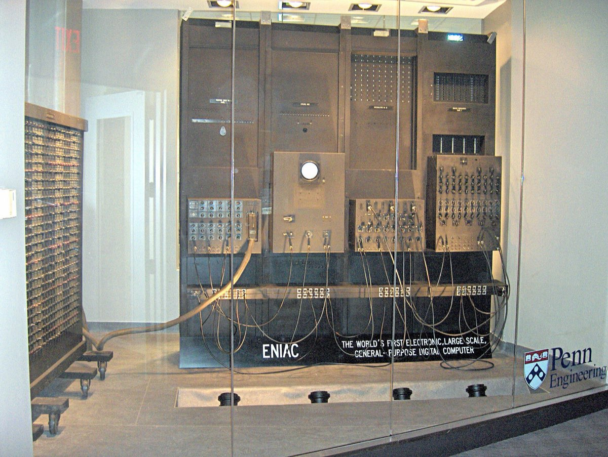
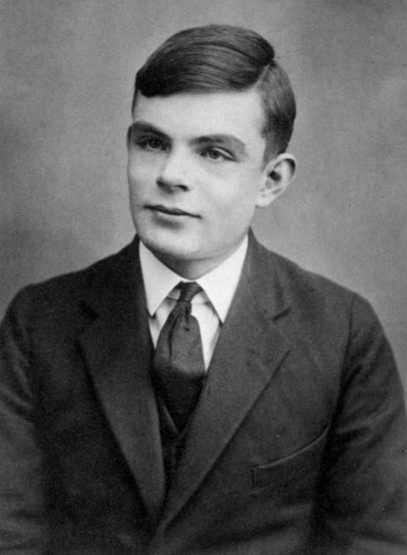
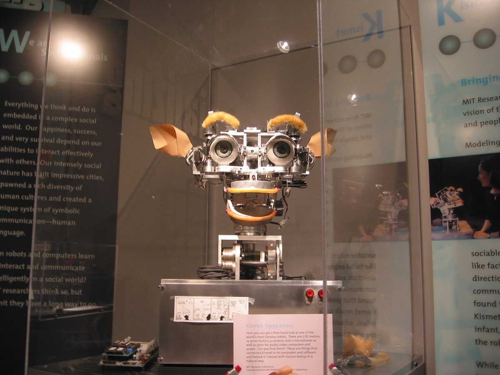
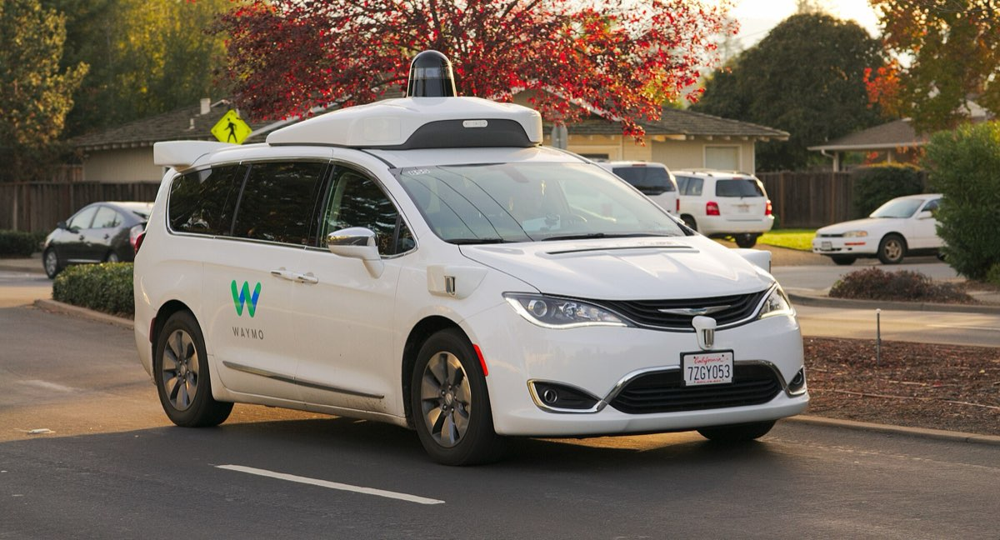

Reference
Gallery
About
Four photographs: a portrait of Alan Turing, whose work opens section 02; two historic machines; and one system of the kind described in section 03.
Freely licensed photographs of current AI are scarce, for a reason worth stating: most modern AI has no appearance. A recommendation system, a spam filter and a language model are software, and photographs of them would show a data centre at best and a stock-photo robot at worst.
Eight candidates were assessed. Four were rejected for being too low-resolution to print or display well. Adding weak images to reach a rounder number would have made the page worse, so it stops at four.
Four figures
Figure 1 — ENIAC

Part of ENIAC, one of the first general-purpose electronic computers, now on display at the University of Pennsylvania. It was completed in 1945, about a decade before the term “artificial intelligence” was coined. The loops of patch cable show how it was programmed: by physically rewiring it.
Photograph: The original uploader was TexasDex at English Wikipedia.. Licence: CC BY-SA 3.0. Source: Wikimedia Commons. Resized and recompressed for the web.

Figure 2 — Alan Turing

Photographed at sixteen, well before the 1950 paper that set out the imitation game. Turing’s move — replacing “can machines think?” with a question about observable behaviour — still shapes how systems are judged today.
Photograph: Possibly Arthur Reginald Chaffin (1893-1954). Licence: Public domain. Source: Wikimedia Commons. Resized and recompressed for the web.

Figure 3 — Kismet, 1990s

A robot built at MIT to study social interaction, with movable ears, eyebrows and lips. Kismet understood nothing, but people reliably read emotion into its expressions — the same effect Weizenbaum observed with ELIZA, in physical form.
Photograph: Unknown. Licence: CC BY-SA 3.0. Source: Wikimedia Commons. Resized and recompressed for the web.

Figure 4 — Autonomous test vehicle, 2017

A self-driving test car on a public road, sensors visible on the roof. This is the application from section 03 where the cost of a wrong prediction is highest and most immediate — and where the rare case, not the routine one, is the hard part.
Photograph: Dllu. Licence: CC BY-SA 4.0. Source: Wikimedia Commons. Resized and recompressed for the web.

Reuse
About these credits
Every image here is either public domain or licensed under Creative Commons. The CC BY-SA licences require attribution, a link to the licence, and a statement of any changes made — which is why the credit sits under each photograph rather than being tucked into a footer.
All four were resized to 1200 pixels wide and recompressed, reducing the page from roughly 2.0 MB to 640 KB. That is an accessibility and functionality decision as much as an aesthetic one: the original files would have been slow on a phone connection.
Next Glossary